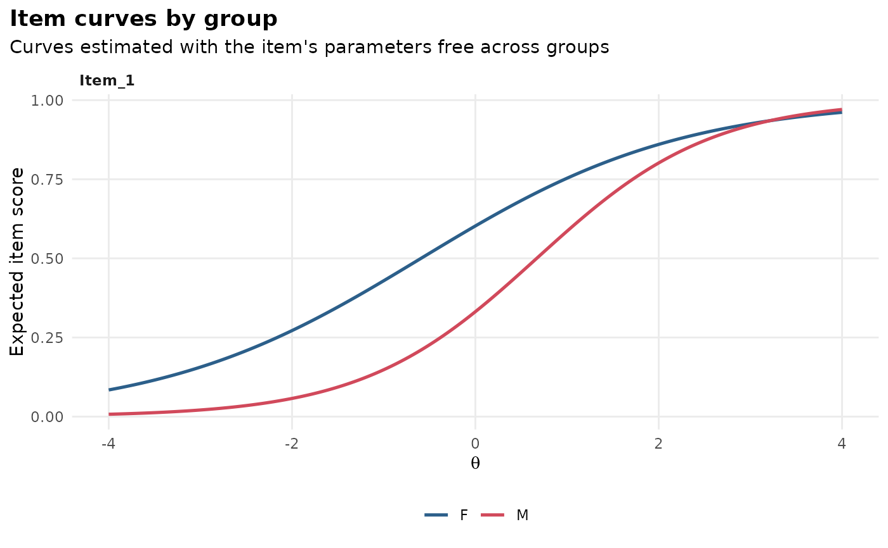

type = "effect" shows the signed expected-score difference for each item,
with flagged items highlighted; type = "curves" overlays the expected item
score curves of each group for the chosen (by default the flagged) items.
Arguments
- x
an
mv_difobject fromdif().- type
"effect"or"curves".- which.items
items to draw for
type = "curves", by name. Defaults to the flagged items, or the item with the largest effect if none is flagged.- theta_lim
range of the latent trait for
type = "curves".
Examples
# \donttest{
set.seed(1)
a <- matrix(rlnorm(8, 0.2, 0.3)); d <- matrix(rnorm(8))
d2 <- d; d2[1] <- d2[1] - 1
data <- rbind(simdata(a, d, 400, itemtype = "2PL"),
simdata(a, d2, 400, itemtype = "2PL"))
res <- dif(data, group = rep(c("F", "M"), each = 400))
gg_dif(res)
 gg_dif(res, type = "curves")
gg_dif(res, type = "curves")

# }